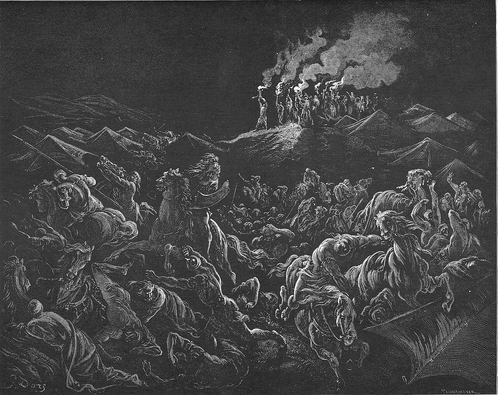

Isaiah 9 — The Mister Translation

Isaiah 9. Doré engraves the night in Judges 7, Gideon’s attack on the camp of Midian with torches and trumpets; it is not a scene from the poem, but verse 3 points straight at it, “as in the day of Midian”, and the picture is a night with lights held up in it, the one thing the first verse of the poem asks for.

Translator's Notes — verse by verse
⭐ “Deepest darkness”, and what Matthew does with it. Tsalmavet is the word that the shelf prints as “the shadow of death”, and the Hebrew letters can be read as tsel, shadow, and mavet, death, or as a single word for the deepest darkness (dictionary). The KJV has “the land of the shadow of death”, the NIV “the land of deep darkness”, the NWT 1984 “the land of deep shadow”, and the Douay “the region of the shadow of death”. This translation prints “deepest darkness” in line with the dictionary. Then nagah, “has shone”, is the verb of a light that comes up on people (dictionary); the NIV has “a light has dawned” and the KJV “hath the light shined”. Matthew quotes the verses on either side of the numbering seam as one, “Land of Zebulun and land of Naphtali, the way of the sea, beyond the Jordan, Galilee of the nations — the people sitting in darkness saw a great light” (Matthew 4:15–16, now on these pages), and puts them at the start of Jesus’s work in Galilee. The Greek has “sitting”, kathēmenos, where the Hebrew has “walking”; that is Matthew’s wording, and the translation of Isaiah does not follow it.
⭐ The numbers. The Hebrew chapter has twenty verses and the English has twenty-one, because the English chapter begins a verse earlier. The first verse in the English Bible, “Nevertheless the gloom will not be as it was for the land of Zebulun and the land of Naphtali”, is the last verse of Isaiah 8 in the Hebrew, 8:23. So the Hebrew 9:1, “The people walking in the darkness”, is 9:2 in English, and the most quoted verse of the chapter, “For unto us a child is born”, is 9:6 in English and verse 5 on this page. All seven versions on the shelf number the chapter the English way: the KJV, the ASV, the NIV, the NWT 1984, the TLB, the Geneva and the Douay all print the Zebulun and Naphtali verse as 9:1. A reader who looks up Isaiah 9:6 in an English Bible is looking for verse 5 here.
⚠ A written/read pair. The Hebrew has a ketiv/qere in the middle of the line. The consonants on the page spell lo, “not”, and the vowels that the scribes supplied for reading give lo, “to it” or “for it”; the two sound the same. Written, the line reads “You have multiplied the nation; you have not made the joy great.” Read, it says “You have multiplied the nation; you have made its joy great.” Mechon-Mamre prints both side by side in the Hebrew column, and this translation follows the read form, which fits the verse that follows (they rejoice, they exult). The shelf splits three ways. The KJV follows the written form, “and not increased the joy”; so does the Geneva, “and not increased their joy”; and so does the Douay, “and hast not increased the joy”. The ASV follows the read form, “thou hast increased their joy”, as do the NIV, “and increased their joy”, and the NWT 1984, “for it you have made the rejoicing great”. The TLB paraphrases, “For Israel will again be great, filled with joy”. Three, three and one make the seven.
⭐ Harvest and plunder. “Harvest” is qatsir, the grain harvest, and “plunder” is shalal (dictionary), what a victorious army divides. The two joys are set side by side, and neither is the joy of a nation that has been left alone. The KJV has “as men rejoice when they divide the spoil” and the NIV “as warriors rejoice when dividing the plunder”. “Before you” turns the poem to address, and the line does not name the one addressed.
⭐ Yoke, staff, rod, and the shoulder. Three tools of driving, ol, the yoke, matteh, the staff (dictionary), and shevet, the rod (dictionary), are all on the shoulder, and all broken. Noges, “taskmaster”, is the one who drives (dictionary): it is the word of the taskmasters of Egypt, “because of their taskmasters” (Exodus 3:7, now on these pages) and “Pharaoh commanded the taskmasters of the people” (Exodus 5:6, now on these pages). The KJV, the ASV and the NIV have “oppressor”, and the NWT 1984 “the one driving them to work”. The Douay turns the two tools round, “the rod of their shoulder, and the sceptre of their oppressor”, and the NIV turns the staff into “the bar across their shoulders”. “Yoke, burden, shoulder” comes back at Isaiah 14:25 (now on these pages), of Assyria: “his yoke shall depart from them, and his burden shall depart from his shoulder”, with the same three words.
⭐ “As in the day of Midian”. The phrase stands in this one verse of the Hebrew Bible. It points to Gideon’s victory, when the two princes of Midian were taken and killed (Judges 7:25, now on these pages), after which “Midian was subdued before the sons of Israel, and they lifted up their heads no more” (Judges 8:28, now on these pages). The NIV has “as in the day of Midian’s defeat”, and the TLB supplies the man the verse does not name: “by Gideon’s little band”.
⚠ The boot. Se’on is a word that stands in no other verse of the Hebrew Bible, and so’en, the one who does it, is built on the same letters: a boot, or whatever is trampled in, and the one who tramps, “in the tumult” (ra’ash, a quaking or a din). The shelf does not agree on what it is. The NIV has “Every warrior’s boot used in battle” and the NWT 1984 “every boot of the one tramping with tremors”; the ASV has “all the armor of the armed man in the tumult”; the KJV has “every battle of the warrior is with confused noise”; the Douay “every violent taking of spoils, with tumult”; and the TLB “no longer be the issuing of battle gear”. The translation keeps the boot, the plainest reading of a word that no other verse can check. The verse ends in fire: “fuel of fire” stands in two verses, here and at verse 18, where the people are the fuel. Ma’akholet is “what is eaten”, so the fire is fed, and “fuel” is the English that fits it.
⭐ “A child”, “a son”, “to us”. Yeled yullad lanu, ben nittan lanu: “born” and “given” are both passives, with lanu, “to us”, twice, and the line says nothing of who the child is or when he is born. The two words for him differ: Isaiah 7:14 has ben, “a son”, and “she will call his name Immanuel” (Isaiah 7:14, now on these pages), and here the child is both yeled and ben. Readers differ on who the child is, and this page does not vote; what the Hebrew shows is a birth described as already done. The KJV, the ASV and the TLB have “For unto us a child is born, unto us a son is given”, the NIV “For to us a child is born, to us a son is given”, and the NWT 1984 “For there has been a child born to us, there has been a son given to us”.
⭐ The government, and the shoulder. Hamisrah is the rule, the office of governing (dictionary), and that form, with the article, stands in two verses of the Hebrew Bible, this one and the next. It is “on his shoulder”, al shikhmo, where the yoke and the staff of verse 3 were: the rod on the shoulder of the people is broken, and the rule is put on the shoulder of the child. The same phrase has the key of the house of David, “I will place on his shoulder” (Isaiah 22:22). The KJV has “the government shall be upon his shoulder”, the NIV “the government will be on his shoulders” in the plural, and the NWT 1984 “the princely rule will come to be upon his shoulder”.
⚠ Four names or five. The Hebrew has four phrases: pele yoetz, El gibbor, Avi-ad, Sar-shalom. The last two are joined by a hyphen (a maqqef) and the first two are not. The shelf prints five names in one place and four in another. Five: the KJV has “Wonderful, Counsellor, The mighty God, The everlasting Father, The Prince of Peace”; the ASV “Wonderful, Counsellor, Mighty God, Everlasting Father, Prince of Peace”; the Geneva “Wonderful, Counselor, The mighty God, The everlasting Father, The prince of peace”; the TLB “Wonderful,” “Counselor,” “The Mighty God,” “The Everlasting Father,” “The Prince of Peace”; and the Douay “Wonderful, Counsellor, God the Mighty, the Father of the world to come, the Prince of Peace”. Four: the NIV has “Wonderful Counselor, Mighty God, Everlasting Father, Prince of Peace”, and the NWT 1984 “Wonderful Counselor, Mighty God, Eternal Father, Prince of Peace”. This translation prints four. Pele, a wonder, and yoetz, one who gives counsel, stand together as a title (dictionary, dictionary), and that title stands in no other verse.
⚠ “Who calls the name”. The Hebrew verb is vayyikra, active, “he called”, with no subject named. Five on the shelf make it passive: the KJV has “shall be called”, the ASV “shall be called”, the NIV “will be called”, the NWT 1984 “will be called” and the Douay “shall be called”. The TLB turns it into “These will be his royal titles”, and the Geneva alone prints it active, “he shall call his name”. This translation prints “his name is called”. A name called out, with the caller left unsaid, is what the Hebrew has.
⚠ El gibbor. El is God, and gibbor is a mighty one, a warrior (dictionary). The two words stand side by side in two verses, here and in the remnant of Jacob that “will return” to El, gibbor (Isaiah 10:21), where the printed text puts a comma between them, so that it may read “to God, the mighty one”. Elsewhere the two words stand apart in a title of God: “the great God, the mighty and the fearsome” (Deuteronomy 10:17, now on these pages). “Mighty God” is the KJV (“The mighty God”), the ASV, the NIV and the NWT 1984 (“Mighty God”), and the Douay turns it round, “God the Mighty”. Names in these chapters are often whole sentences, as Immanuel, “God is with us”, is (Isaiah 7:14, dictionary), so the phrase may be a title for the child or a sentence about God; the page prints the Hebrew and does not choose.
⭐ Avi-ad and Sar-shalom. Avi-ad is “father of ad”, and ad is perpetuity, a long time that does not stop; the phrase stands in this one verse. The KJV has “The everlasting Father”, the NIV “Everlasting Father” and the NWT 1984 “Eternal Father”, and the Douay has “the Father of the world to come”. This translation prints “Father of Eternity”, which is the shape of the Hebrew. Sar is a prince, a commander, an officer (dictionary), and shalom is peace, wholeness (dictionary); “Prince of Peace” stands in this one verse, and “no end of peace” in the next verse is the same shalom.
⚠ A written/read pair, and a closed mem. The first word of the verse carries the second ketiv/qere of the chapter. Written, the word has a closed, final-form mem inside it, which the printed text shows as lam rabbeh. Read, it is lemarbeh, “to the increase of”, one word with an ordinary mem. Mechon-Mamre prints both, and this translation follows the read form. Why the scribes closed the letter is not said in the text. The KJV has “Of the increase of his government and peace”, the ASV “Of the increase of his government and of peace”, the NIV “Of the greatness of his government and peace” and the Douay “His empire shall be multiplied”. The four join the growth to the government. “No end” is ein-qets, and “peace, no end” stands in this one verse: it is the peace that has no end, not the kingdom. When Gabriel promises Mary the throne of David, “of his kingdom there will be no end” (Luke 1:33, with verse 32, now on these pages), it uses both phrases, the throne and the no end, and applies the second to the kingdom.
⭐ “To establish it and to uphold it”. Lehakhin is the verb kun (dictionary), the one that God uses for David’s house: “I will establish the throne of his kingdom forever” (2 Samuel 7:13, now on these pages; 7:16), and “throne” and “kingdom” are the two words of the promise, “your house and your kingdom shall be made sure forever before you; your throne shall be firm forever”. “Justice and righteousness” are mishpat and tsedaqah (dictionary, dictionary), the pair by which Zion is redeemed, “Zion will be redeemed by justice, and those in her who return, by righteousness” (Isaiah 1:27, now on these pages). “From now and forever” is me’atah ve’ad olam, the phrase of “Jehovah will keep your going out and your coming in, from now and forever” (Psalm 121:8, now on these pages).
⭐ “The zeal of Jehovah of armies will do this”. Qin’at Yehovah tseva’ot ta’aseh-zot (dictionary): the sentence stands in three verses of the Hebrew Bible, this one, Isaiah 37:32 and 2 Kings 19:31, where it ends the promise to a remnant that “from Jerusalem a remnant will go out”. The KJV has “will perform this”, the ASV “will perform this”, the NIV “will accomplish this” and the NWT 1984 “will do this”.
⭐ A word that falls. The poem turns here from the child to the word that is sent. Davar is a word, and a thing; the Lord sends it “into Jacob”, and it “falls” (nafal) upon Israel The KJV, the ASV and the Douay have “The Lord sent a word into Jacob, and it hath lighted upon Israel”, where “lighted” is the old English for landed, and the NWT 1984 has “There was a word that Jehovah sent against Jacob, and it fell upon Israel”. The NIV has “a message”, which is a narrower word. The poem then says who is meant: Ephraim and the inhabitant of Samaria (encyclopedia, encyclopedia).
⭐ “Pride and greatness of heart”. Be-ga’avah u-vegodel levav: “greatness of heart” stands in two verses of the Hebrew Bible, this one and Isaiah 10:12, where Jehovah punishes the “fruit of the greatness of the heart” of the king of Assyria. The KJV has “pride and stoutness of heart”, the NIV “pride and arrogance of heart” and the NWT 1984 “insolence of heart”.
⭐ Bricks, hewn stone, sycamore-figs and cedars. What they say is the vow of a people that will not be humbled: the bricks fall, so they will build with gazit, cut stone; the sycamore-figs are cut down, so they will replace them with cedars. Shiqmim are sycamore-fig trees, and the two trees stand together once more at 1 Kings 10:27 (now on these pages), where Solomon makes “cedars as plentiful as the sycamore-figs of the lowland”: the sycamore-fig is the plentiful tree, and the vow promises the finer wood. The KJV and the ASV have “sycomores”, the Douay “sycamores”, the NWT 1984 “Sycamore trees”, the Geneva “wild fig trees” and the NIV “fig trees”. For the stone, the KJV has “hewn stones”, the NIV “dressed stone” and the Douay “square stones”.
⚠ “Against him”. Vayesaggev Yehovah et-tsarei Retsin alav: Jehovah lifts up on high “the adversaries of Rezin”, and that phrase stands in this one verse. Who “him” is, is not said: the nearest man is the one who spoke in verse 8, Ephraim, and Isaiah 7 has Ephraim beside Rezin: “Rezin king of Aram and Pekah son of Remaliah, king of Israel, went up to Jerusalem to make war against it” (Isaiah 7:1, now on these pages; encyclopedia). The KJV has “against him”, the NIV “against them”, and the Douay “over him”. Yesakhsekh, “stirs up”, is a word that stands in no other verse, and the versions guess: the KJV has “join his enemies together”, the ASV “stir up his enemies”, the NIV “has spurred their enemies on”, the NWT 1984 “goad on” and the Douay “bring on his enemies in a crowd”. This translation keeps “stirs up”.
⭐ East, behind, and the refrain. Aram miqqedem u-fillishtim me’achor: Aram “from the front”, which is the east, and the Philistines “from behind”, the west. The KJV, the ASV and the Geneva have “before” and “behind”; the NIV and the Douay have “from the east” and “from the west”, and the NWT 1984 “from the east” and “from behind”. The KJV calls the first people “the Syrians”, the ASV “the Syrians” and the NIV “Arameans”; this translation prints “Aram”, as in Isaiah 7. The sentence that closes the verse, “For all this his anger has not turned back, and his hand is stretched out still”, is a refrain: it stands in five verses of the Hebrew Bible, Isaiah 5:25 and 10:4, and this chapter at verses 11, 16 and 20. The KJV has “his hand is stretched out still”, the NIV “his hand is still upraised” and the NWT 1984 “his hand is stretched out still”.
⭐ Not turned, not sought. Shav, to turn back (dictionary), is the verb of the refrain (“his anger has not turned back”) and of the people (“have not turned back to the one who strikes them”): his anger has not turned and neither have they. Darash, “seek”, is the second failure, “Jehovah of armies they have not sought”. The KJV has “turneth not unto him that smiteth them”, the NIV “have not returned to him who struck them” and the NWT 1984 “have not returned to the One striking them”.
⭐ Head and tail, palm-branch and rush. The tall and the low, the top of the palm and the reed at the water: “palm-branch and rush” stands in two verses of the Hebrew Bible, here and Isaiah 19:15, of Egypt. The ASV has “palm-branch and rush”, the KJV “branch and rush”, the NIV “palm branch and reed” and the NWT 1984 “shoot and rush”; the Douay turns the two words into actions, “him that bendeth down, and him that holdeth back”. The next verse explains the image, which the Hebrew prints with a pronoun to point at each: “the elder and the dignitary, he is the head; and the prophet who teaches lies, he is the tail”. The dignitary is nesu panim, “lifted of face”, and the prophet is navi (dictionary) who teaches sheqer, falsehood (dictionary). The KJV has “the ancient and honourable” and the NWT 1984 “the aged and highly respected one”.
⚠ “Lead astray” or “call blessed”. Me’ashrei ha’am hazeh mat’im: the participle is built on the root of ashrei, “blessed is”, and the shelf reads it both ways, “those who lead” and “those who call blessed”. The KJV has “the leaders of this people cause them to err”, the NIV “Those who guide this people mislead them”, and the Douay takes the other sense, “they that call this people blessed, shall cause them to err”. The ones led are mevullaim, “swallowed up” (dictionary): the KJV and the ASV have “destroyed”, the Geneva “devoured”, the NIV “led astray” and the Douay “thrown down headlong”.
⭐ No joy, no compassion. The Lord has no joy in the young men (bachurav) and no compassion for the orphans and the widows, the very ones whom the Law forbids to be mistreated (Exodus 22:22, now on these pages; dictionary, dictionary), and the reason is that “all of it” is chanef and evil (dictionary). The shelf splits on the word. The KJV has “an hypocrite”, the Douay “a hypocrite”, the ASV “profane”, the NIV “ungodly”, the NWT 1984 “apostates” and the TLB “filthy-mouthed”. This translation prints “godless”. “Folly” is nevalah (dictionary), and every mouth speaks it.
⭐ Fire in the thickets. The fire is wickedness itself: shamir vashayit, “briers and thorns”, stands in four verses of the Hebrew Bible, and the other three are the vineyard that Jehovah lets grow wild (Isaiah 5:6) and the land that will be briers and thorns when the invaders come (Isaiah 7:24 and 7:25, now on these pages). Then the fire climbs into the thickets of the forest, and the smoke rolls up. “Is scorched” is ne’tam, a word that stands in no other verse, and the versions guess: the KJV has “darkened”, the ASV “burnt up”, the NIV “scorched”, the NWT 1984 “set afire” and the Douay “troubled”. The people are ma’akholet esh, “fuel of fire”, as the boots of verse 4 were. “No man spares his brother” is the last of the fires before the people start to eat.
⚠ “The flesh of his own arm”. The consonants of zero’o, zayin, resh, ayin, vav, spell “his arm” with one set of vowels and “his seed”, his offspring, with another. The KJV has “the flesh of his own arm”, the ASV “the flesh of his own arm”, the Geneva “the flesh of his own arm”, the Douay “the flesh of his own arm” and the NWT 1984 “the flesh of his own arm”; the NIV has “the flesh of their own offspring”, and the TLB “eat their own children”. Five and two make the seven. “flesh of his arm” stands in two verses, this one and Jeremiah 17:5, “makes flesh his arm”. This translation prints “arm”, the vowels the Hebrew has.
⭐ Manasseh and Ephraim. “Manasseh Ephraim, and Ephraim Manasseh” has no verb in the Hebrew, and the verb of eating from the line before carries over: each tribe of Joseph eats the other. They are the two sons of Joseph, blessed with Ephraim set first (Genesis 48:20, now on these pages), and here they turn on each other and then “together” on Judah. The refrain closes the chapter as it has closed verses 11 and 16 (note on verses 10–11).
Patterns worth carrying forward
Where this translation keeps the words exact and distinct: “deepest darkness” for tsalmavet; “taskmaster” for noges, as at Exodus 3:7; “yoke”, “staff” and “rod” for ol, matteh and shevet; “the government” for misrah; “Wonderful Counselor” for pele yoetz, “Mighty God” for El gibbor, “Father of Eternity” for Avi-ad and “Prince of Peace” for Sar-shalom; “establish” for kun, as at 2 Samuel 7:13; “justice” for mishpat and “righteousness” for tsedaqah, as at Isaiah 1:27; “the Lord” for Adonai and “Jehovah of armies” for Jehovah tseva’ot; “Aram”, as at Isaiah 7:2; “sycamore-figs” for shiqmim, as at 1 Kings 10:27; “head” and “tail”; and “turned back” for shav. The Hebrew has two written and read pairs in this chapter, in verse 2 (lo, “not”, read lo, “to it”) and in verse 6 (lam rabbeh, read lemarbeh), and the translation follows the read form each time.
Echoes paid. Matthew’s “Land of Zebulun and land of Naphtali” (Matthew 4:15–16); the taskmasters of Exodus 3:7 and 5:6; the day of Midian in Judges 7:25 and 8:28; the child and the sign of Isaiah 7:14 and Rezin and Pekah of 7:1; the throne and kingdom of 2 Samuel 7:13 and 7:16 and Luke 1:32–33; “justice and righteousness” of Isaiah 1:27; “from now and forever” in Psalm 121:8; the cedars and sycamore-figs of 1 Kings 10:27; the briers and thorns of Isaiah 7:24–25; the mighty God of Deuteronomy 10:17; and the blessing of Ephraim and Manasseh in Genesis 48:20.
Echoes planted. The last verse of Isaiah 8 (8:23); yoke, burden and shoulder again in Isaiah 14:25; the key of David on the shoulder in Isaiah 22:22; El gibbor in Isaiah 10:21; the greatness of the heart in Isaiah 10:12; the refrain of the stretched-out hand in Isaiah 5:25 and 10:4; the vineyard of briers and thorns in Isaiah 5:6; the palm-branch and rush of Isaiah 19:15; the zeal of Jehovah of armies in Isaiah 37:32 and 2 Kings 19:31; and the flesh of the arm in Jeremiah 17:5. None of these is translated here yet.
⚠ A note on order: Isaiah stands on these pages at 1, 6, 7, 9, 11, 14, 26, 35, 40, 41, 43, 53, 54, 55, 58 and 61, chosen by how often they are read rather than in sequence. The sequential thread is unchanged: next in sequence is Isaiah 2.